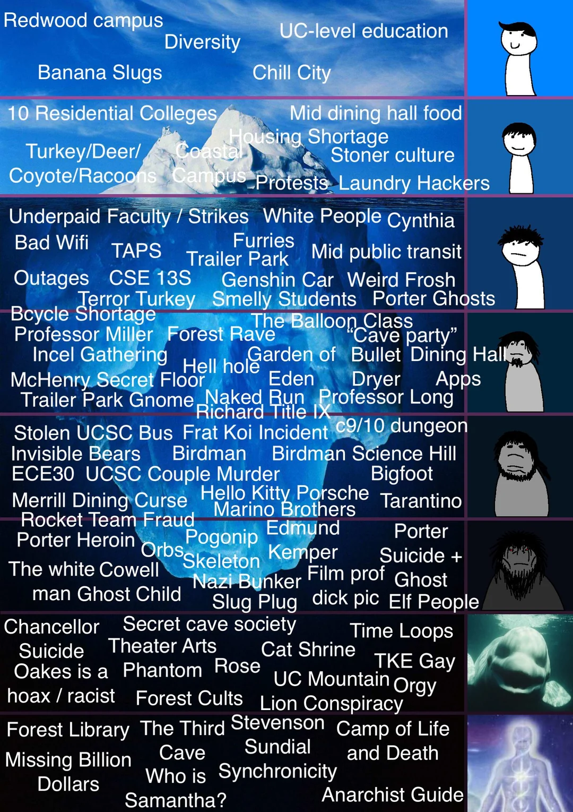
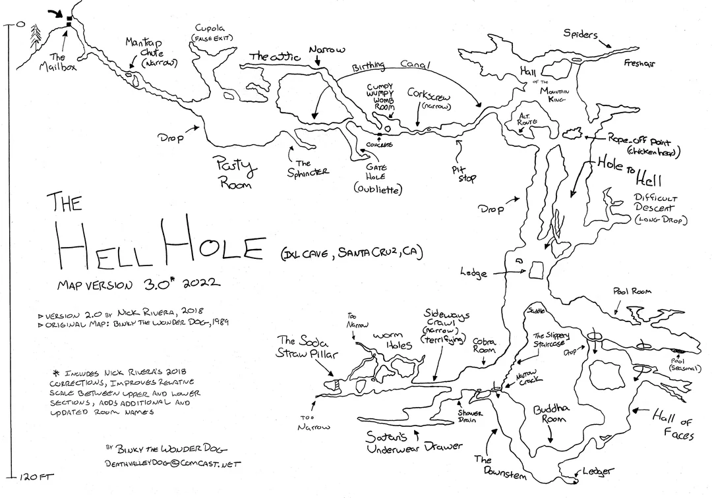

UCSC Treeberg
welcome to a deep dive to the campus
*Note: all the images on this site right now are placeholders
Maybe for more Javascript interactivity we can have a short Javascript animation or some other thing to transition to the tree, so JS is being used for more things like needed for the assignment
Maybe like a little info quiz like How much do you know about UCSC? and then have another one at the end after scrolling thru, and you can compare your scores before & after. We don't have to do this, but I'm putting one on here for the prototype :p
JS Libraries I found that I think are neat, just putting them here for me:
- https://github.com/WeiChiaChang/easter-egg-collection
- https://github.com/tholman/elevator.js?files=1
- https://github.com/mrdoob/three.js?tab=readme-ov-file
- https://github.com/VincentGarreau/particles.js?tab=readme-ov-file
- https://github.com/maxwellito/vivus?tab=readme-ov-file - This one can be used for animating icons
- https://github.com/janpaepke/ScrollMagic?tab=readme-ov-file - this one can be used to make the scrolling better & funner
HAY
more info or something, idk
HAY
more info or something, idk
HAY
more info or something, idk. by the way, all the answers for the quiz are c (option 3)
HAY
more info or something, idk
HAY
more info or something, idk

